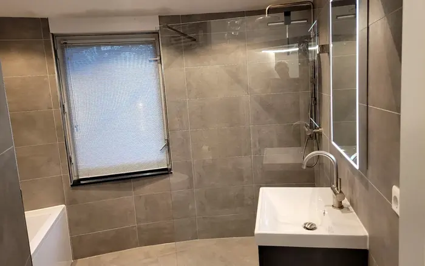
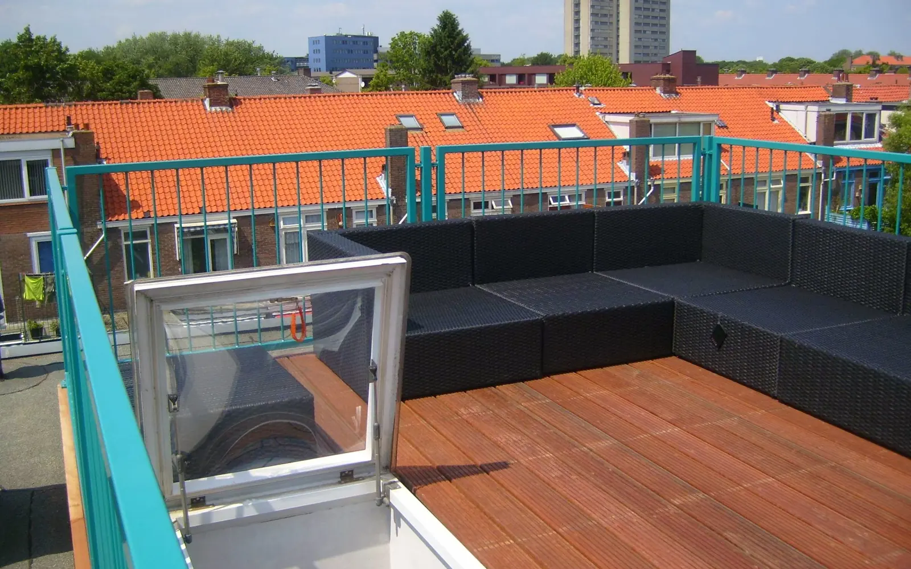
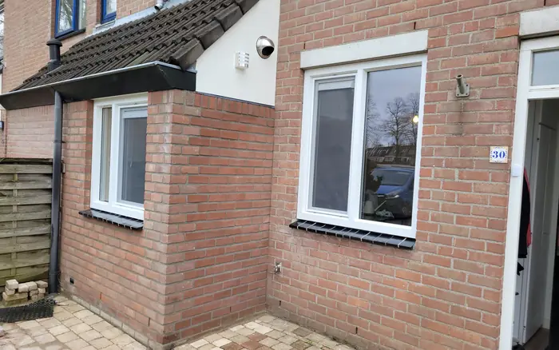
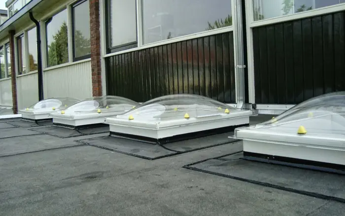

Badkamer en toilet
Een nieuwe badkamer en een nieuw toilet. Een klant schreef dat het "op een professionele en nette wijze" gebeurde.
- inloopdouche met douchegoot
- hangtoilet en bad
- wastafelmeubel en verlichte spiegel

Badkamers · Keukens · Verbouwingen · Daken · Kozijnen
De naam zegt het al: u belt of appt Acht tot Acht van acht uur 's morgens tot acht uur 's avonds. Voor een badkamer, een keuken of een verbouwing van maanden.
Ma t/m vr 08:00 tot 20:00 · za 08:00 tot 17:00 · zo gesloten
Liever bellen? 06 44255227

Een nieuwe badkamer en een nieuw toilet. Een klant schreef dat het "op een professionele en nette wijze" gebeurde.

Grote verbouwingen van maanden, een aanbouw of een nieuwe verdieping op de woning.

Dakbedekking, lichtkoepels en een dakterras met vlonder en dakluik, zoals op de foto bovenaan.
"Wij hebben een grote verbouwing van ons huis achter de rug van een aantal maanden, die grotendeels is uitgevoerd door Acht tot Acht. Henny en zijn mannen hebben vakwerk afgeleverd. Zij komen de gemaakte afspraken na, denken goed mee, geven goede adviezen, en zijn plezierig in de omgang en communicatie. Wij zijn heel tevreden met het eindresultaat.
Wij kunnen Acht tot Acht van harte aanbevelen!"
"Henny en zijn mannen hebben bij ons recent een nieuwe verdieping geplaatst op onze huidige woning. Een flinke verbouwing van een aantal maanden waarbij we de mannen met veel plezier over de vloer heb gehad! Met het eindresultaat zijn we ook zeer tevreden; Henny is een echte vakman die alles tot in de puntjes afwerkt en met zichtbare trots oplevert! Ik zou iedereen aanraden Acht tot Acht te bellen bij verbouwingsplannen; ze denken graag mee, zijn zeer plezierig in de omgang en leveren vakwerk!"
Stuur een appje met een paar foto's, of bel tot acht uur 's avonds.